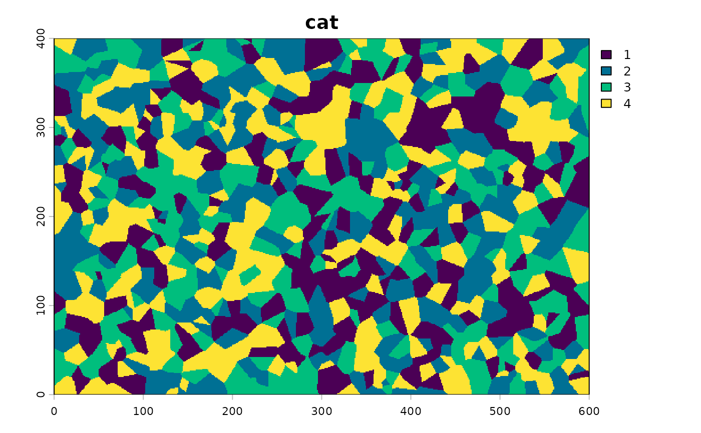
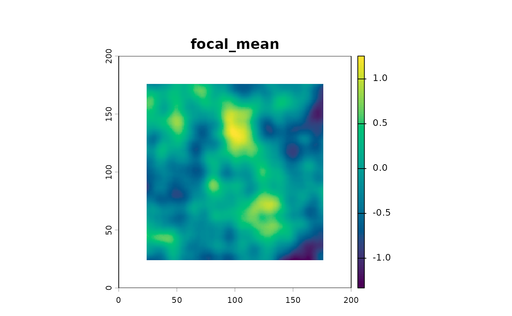
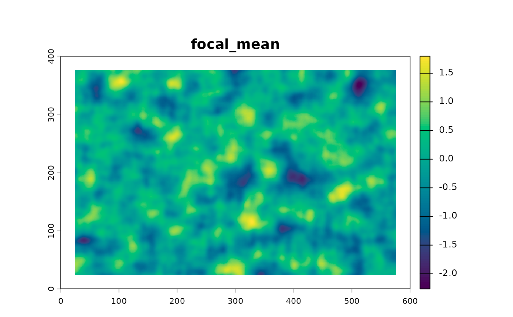
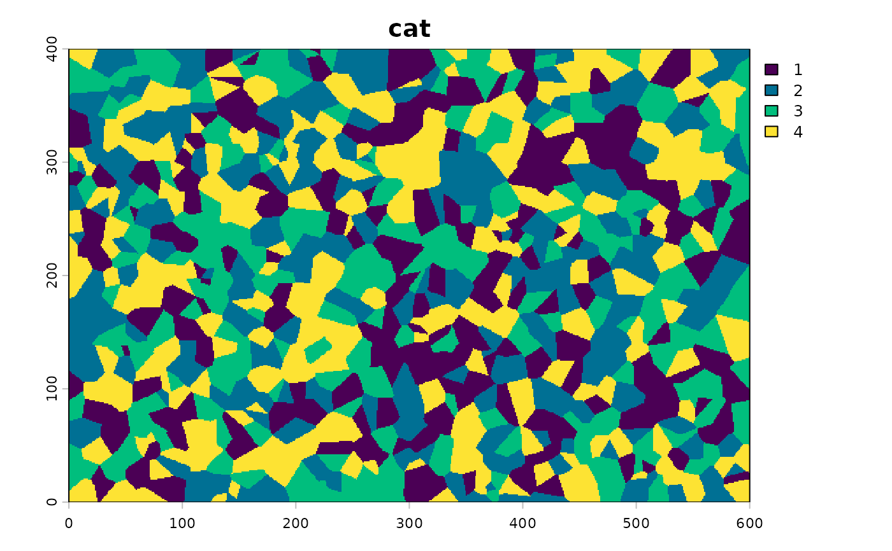
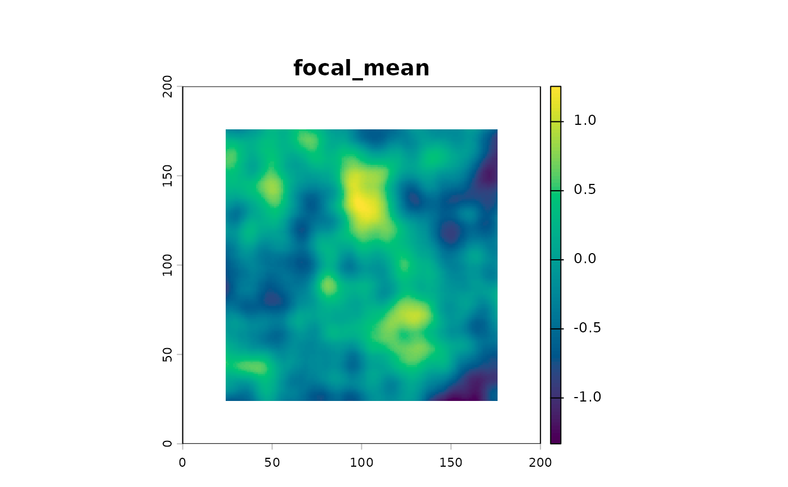
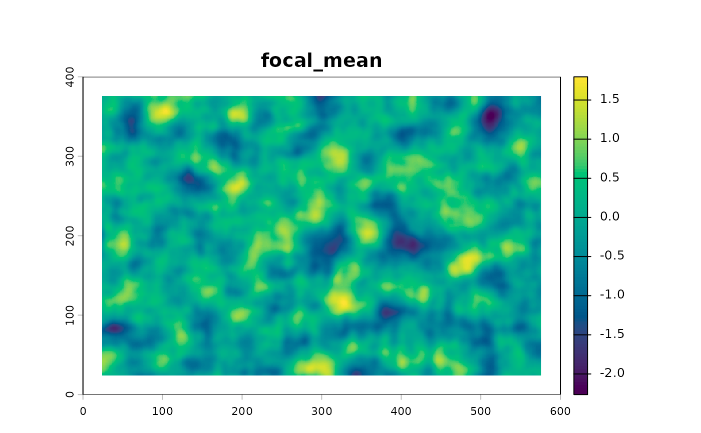

These functions simulate simple categorical and continuous landscapes
using Voronoi and random noise function built in terra.
Examples
# for the sake of replicability we set seeds
# categorical landscapes
simulate_voronoi(seed=2329) %>% p()
#> simulated voronoi landscape with seed 2329
 simulate_voronoi(seed=1517, nrow = 400, ncol=600, n_cat = 4, n_points=820) %>% p()
#> simulated voronoi landscape with seed 1517

# continuous landscapes (dem-like)
simulate_continuous(2329) %>% p()
#> continuous landscape with seed 2329

simulate_continuous(1517, nrow = 400, ncol=600) %>% p()
#> continuous landscape with seed 1517

simulate_voronoi(seed=1517, nrow = 400, ncol=600, n_cat = 4, n_points=820) %>% p()
#> simulated voronoi landscape with seed 1517

# continuous landscapes (dem-like)
simulate_continuous(2329) %>% p()
#> continuous landscape with seed 2329

simulate_continuous(1517, nrow = 400, ncol=600) %>% p()
#> continuous landscape with seed 1517
